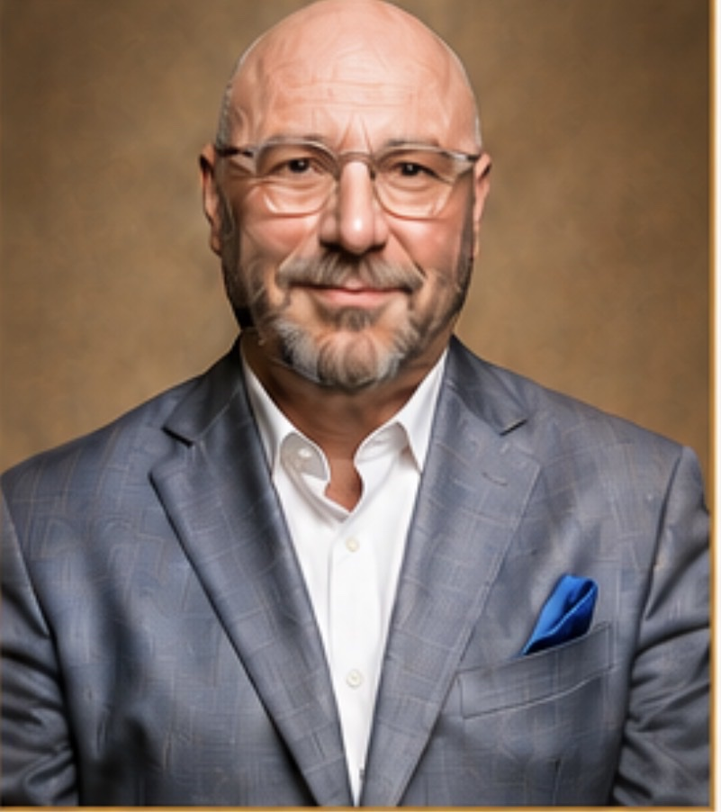

JAYSON A. HYMES, M.D., MPH, FAPCM, FASAM, QME
MEDICAL DIRECTOR
Dr. Jayson A. Hymes is triple board-certified in Addiction Medicine, Pain Medicine, and Anesthesiology with over 40 years of experience treating addiction, chronic pain, and complex medical conditions.
A graduate of the University of Louisville School of Medicine and the Harvard School of Public Health, Dr. Hymes completed his residency and fellowship training through Harvard-affiliated teaching hospitals. He is a Fellow of the American Society of Addiction Medicine (FASAM) and a diplomate of the American Board of Addiction Medicine, the American Board of Pain Medicine, and the American Board of Anesthesiology.
As Medical Director, Dr. Hymes provides expert oversight of withdrawal management, complex medical care, and integrated treatment to support optimal outcomes for first responders and high-performance professionals.